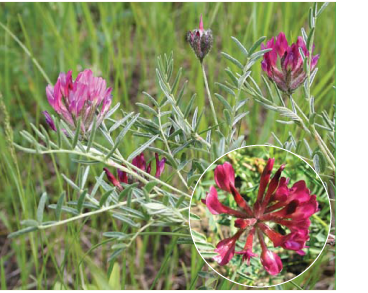

Рідкісні рослини
Айстра альпійська
Гемікриптофіт. Багаторічна трав’яна рослина з довгими горизонтальними та короткими висхідними кореневищами, мичкуватою кореневою системою й висхідними напіврозетковими надземнимии пагонами 5–25 см заввишки.

Астрагал крейдолюбний
Хамефіт. Напівкущ до 100 см заввишки. Стовбурці вкриті буровато-коричневою потрісканою корою; річні пагони 15–50 см завдовжки з сріблясто-білою тонкою корою.
Кучерявка відігнута
Хамефіт. Багаторічна рослина (напівкущ) 30–70 см заввишки, з розвиненою стрижневою кореневою системою, розгалуженим тонким стовбурцем, із прямими гілками з жовтувато- або червонувато-бурою розтрісканою корою. Розтруби короткі, циліндричні, 2–3 мм завдовжки, внизу білі, вгорі блідоплівчасті.